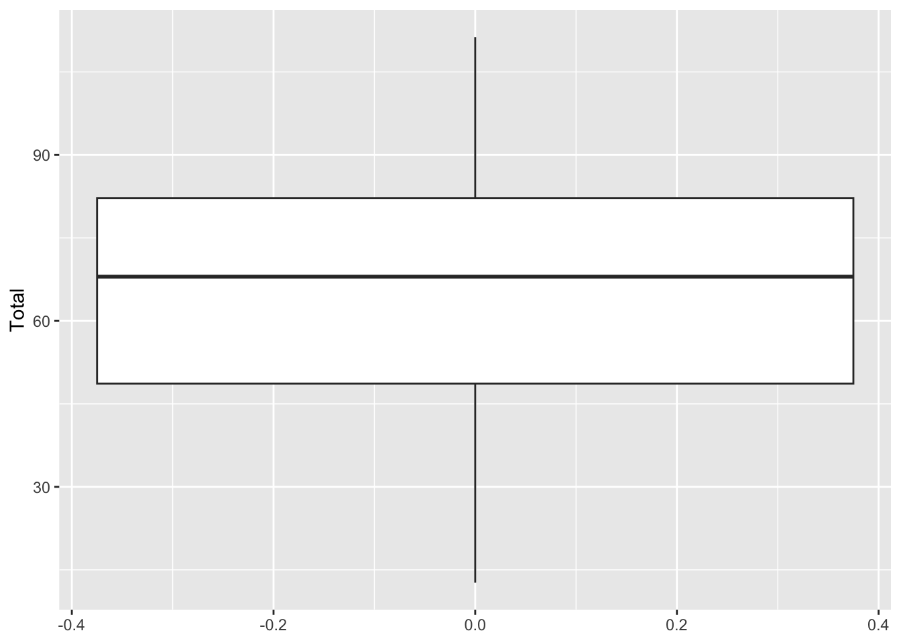

Semana 3 - Sesión Teórica
Estadística Descriptiva
Medidas de dispersión
Las medidas de variación describen la “extensión” de una data (Agresti y Finlay 2009).
Las medidas de variabilidad o de dispersión muestran el grado en que un conjunto de observaciones son homogéneas o heterogéneas entre si (Toma y Rubio 2012).
Los estadísticos de dispersión describen cómo se dispersan las puntuaciones de una variable de intervalo / razón (cuantitativa) a lo largo de una distribución (Ritchey 2008)
Pregunta: ¿Existen medidas de dispersión para variables que no sean de intervalo o razón?
Dos perspectivas:
La dispersión o variación es un atributo de variables intervalara.
Con algunas particularidades, es posible analizar la variación o dispersión de variables nominales, ordinales e intervalares (diferentes medidas de dispersión) (Moore 2005) Una manera de “resolver” estas diferencias es considerar que existen (a) medidas de dispersión o variación (para variables intervalares) y (b) medidas de posición (que pueden ser usadas en variables ordinales para dar cuenta de su dispersión)
Entonces en palabras simples,
Las medidas de dispersión son herramientas estadísticas que nos indican qué tan dispersos o agrupados están los datos de un conjunto respecto a un valor central (como la media).
En otras palabras, nos dicen cuánto varían los datos entre sí. Mientras mayor sea la dispersión, más separados están los valores; mientras menor sea, más homogéneos o parecidos son.
La Desviación Típica
La Desviación Típica o Estándar mide la dispersión (la distancia) de todas las observaciones respecto a la media o promedio Sin embargo, para calcular la desviación típica o estándar (s) necesitamos calcular primero la Varianza.
La fórmula de la desviación estándar es:
\[ \sigma = \sqrt{\frac{\sum (x - \mu)^2}{N}} \]
Donde:
- \(\sigma\): desviación estándar
- \(x\): cada valor del conjunto de
datos
- \(\mu\): la media del conjunto
- \(N\): cantidad total de datos
Ejemplo: Si una persona duerme 8 horas el lunes, 9 horas el martes, 10 horas el miercoles, 11 horas el jueves y 12 horas el viernes.
Entonces su promedio de horas de lunes a viernes es de 10 horas.
Cálculos (diferencia con la media):
(8 - 10)² = 4 (9 - 10)² = 1 (10 - 10)² = 0 (11 - 10)² = 1 (12 - 10)² = 4 Suma de cuadrados: 4 + 1 + 0 + 1 + 4 = 10 Varianza: 10 / 5 = 2 Desviación estándar: √2 ≈ 1.41
Los datos están muy cercanos al promedio → baja dispersión, es decir, el número horas de sueño de esta persona es relativamente similar.
En cambio, si otra persona duerme 2 horas el lunes, 5 horas el martes, 10 horas el miercoles, 15 horas el jueves y 18 horas el viernes.
Su promedio de horas es de 10 horas.
Cálculos (diferencia con la media):
- (2 - 10)² = 64
- (5 - 10)² = 25
- (10 - 10)² = 0
- (15 - 10)² = 25
- (18 - 10)² = 64
Suma de cuadrados: 64 + 25 + 0 + 25 + 64 = 178 Varianza: 178 / 5 = 35.6 Desviación estándar: √35.6 ≈ 5.96
Los datos están muy dispersos respecto al promedio → alta desviación.
Esta persona tendrá mucha diferencia en sus horas de sueño, lo cual sugiere un transtorno de sueño.
La Varianza
La Varianza (s2) de un conjunto de observaciones es la suma de los cuadrados de las desviaciones de las observaciones respecto a su media dividido por n – 1
La fórmula de la varianza poblacional es:
\[ \sigma^2 = \frac{\sum (x - \mu)^2}{N} \]
Donde:
- \(\sigma^2\): varianza
- \(x\): cada valor del conjunto de
datos
- \(\mu\): la media del conjunto
- \(N\): número total de datos
Ejemplo:
# Datos
valores <- c(4, 7, 10, 12, 17)
# Media
media <- mean(valores)
# Desviación
desviacion=sd(valores)
desviacion## [1] 4.949747# Varianza
varianza <- sum((valores - media)^2) / length(valores)
varianza## [1] 19.6Propiedades de la Desviación Típica o Estándar
La Desviación Típica o Estándar (s) mide la dispersión con relación a la media y tiene sentido usarla cuando se elige la Media como medida de tendencia central
La Desviación Típica o Estándar es igual a cero (s = 0) solo en los casos en los que no hay dispersión Esto ocurre únicamente cuando todas las observaciones toman el mismo valor. En caso contrario, la Desviación Típica o Estándar es mayor a cero (s > 0).
A medida que las observaciones se separan más de la media, la Desviación Típica o Estándar (s) se hace más grande
La Desviación Típica o Estándar (s) tiene las mismas unidades de medida que las observaciones originales
Por ejemplo, si el ingreso familiar en Nuevos Soles, la Desviación Típica o Estándar (s) también se expresa en Nuevos Soles. Este es un motivo para preferir la Desviación Típica o Estándar a la Varianza, que se expresaría en Nuevos Soles al cuadrado
Igual que ocurre con la Media, la Desviación Típica o Estándar (s) no es robusta frente a valores atípicos o extremos.
Algunas pocas observaciones atípicas pueden hacer que sea particularmente grande
La Desviación Típica o Estándar es particularmente útil para las distribuciones normales (o que se aproximan a una distribución normal)
La base de datos que emplearemos es la de Estados Fallidos (https://fragilestatesindex.org/excel/). El objetivo es describir el índicador de estados fallidos de una muestra de 162 países.
- Indicar el directorio de trabajo. En el directorio de trabajo debe estar la base de datos en excel.
setwd("/Volumes/Macintosh HD - Datos/12 PUCP-Docencia/2025/Estadística 1/Estadistica1CienciaPolitica")- Instalar el paquete rio
install.packages("rio")
library(rio)Abrimos la base de datos en R Studio
- Importamos la base de datos de excel. Usamos el comando import
data=import("EstadosFallidos2024.xlsx")library(rio)
data=import("EstadosFallidos2024.xlsx")- Revisar las variables
str(data)Limpiar la base de datos en R Studio
- Averiguar si hay datos perdidos
if (sum(!complete.cases(data)) > 0) {
print("Hay datos perdidos en el conjunto de datos.")
} else {
print("No hay datos perdidos en el conjunto de datos.")
}sum(is.na(data))sum(is.na(data$Type))sum(is.na(data$Total))- Eliminar datos perdidos según una variable
data <- data[!is.na(data$Type),]Desviación Típica y Varianza en R.
Desviación Típica
- Usamos el comando sd para solicitar la Desviación Típica.
sd(data$Total)sd(data$Total,na.rm=T)## [1] 24.18048sqrt(var(data$Total))- Usamos el comando sqrt para solicitar la raiz cuadrada.
sqrt(var(data$Total))## [1] 24.18048Varianza
- Usamos el comando var para solicitar la varianza
var(data$Total)var(data$Total)## [1] 584.6954Medidas de Posición
Las Medidas de Posición son otra forma de describir la distribución de una variable
Las Medidas de Posición describen tanto la tendencia central como la variación de un conjunto de datos
La Mediana es un caso especial dentro de un conjunto de Medidas de Posición llamadas Percentiles
Medidas de Posición: Rango
Indica cómo las puntuaciones de una variable ordinal o numérica se distribuyen de menor a mayor. Diferencia entre la puntuación máxima y mínima.
Usamos el comando max para solicitar el valor máximo.
max(data$Total)max(data$Total)## [1] 111.3- Usamos el comando min para solicitar el valor mínimo.
min(data$Total)min(data$Total)## [1] 12.7- Usamos el comando range para solicitar el rango
range(data$Total)range(data$Total)## [1] 12.7 111.3Medidas de Posición: Percentiles
El Percentil “x” es el punto (valor) que indica el “x” porcentaje de observaciones que están por debajo de él .
El Percentil 50 es el punto o valor a partir del cual un 50% de las observaciones se encuentran por debajo de él y un 50% de las observaciones se ubican por encima de él
Pregunta: ¿Qué nombre tiene el percentil 50?
Medidas de Posición: Deciles, Cuartiles y Quintiles
Dependiendo del porcentaje de casos que se quiere identificar al interior de una distribución se pueden usar:
Deciles (10%)
Cuartiles (25%)
Quintiles (20%)
El primer cuartil (C1 o Q1) separa el primer 25% de las observaciones
El segundo cuartil (C2 o Q2) es igual a la Mediana; es decir, divide las observaciones en dos mitades
El tercer cuartil (C3 o Q3) separa el primer 75% de las observaciones
Por lo tanto, la distancia entre el C1 o Q1 y el C3 o Q3 contiene el 50% de los datos centrales
Rango entre cuartiles

https://statistics.cepal.org/portal/inequalities/incomes.html?lang=es&indicator=4665

- Usamos el comando quantile para solicitar el cuartiles
quantile(data$Total)quantile(data$Total)## 0% 25% 50% 75% 100%
## 12.70 48.65 68.00 82.20 111.30Medidas de Posición: Rango Intercuartil
Es la diferencia entre el tercer cuartil y el primer cuartil.
IQR(data$Total)IQR(data$Total)## [1] 33.55Valores Extremos
Son observaciones que se alejan del conjunto der datos. Una regla para determinar si un dato es outliers es:
Si un dato es < Q1 – 1.5(Q3-Q1)
Si un dato es > Q3 + 1.5(Q3-Q1)
Los valores extremos por lo general son atribuibles a una de las siguientes causas: La observación se registra incorrectamente.
La observación proviene de una población distinta. La observación es correcta pero representa un suceso poco común (fortuito).
Diagrama de cajas / Boxplot
Los diagramas de caja muestran la distribución de datos para una variable numérica y ordinal.
Los diagramas de caja ayudan a ver el centro y la extensión de los datos. También se pueden utilizar como herramienta visual para comprobar normalidad o identificar puntos que podrían ser valores atípicos.
Al utilizar un diagrama de caja, busque los valores extremos de sus datos. Tenga cuidado si el conjunto de datos es reducido. Si tiene variables nominales, utilice mejor un diagrama de barras.
Tanto los diagramas de caja como los histogramas muestran la forma de los datos. Ambos pueden usarse para identificar valores atípicos o inusuales. En este ejemplo el histograma es vertical en lugar de horizontal.
Si los datos tienen grupos, quizá los comprenda mejor creando diagramas de caja paralelos, lo que le aporta una manera sencilla y potente de compararlos.
Cálculo del Diagrama de cajas / Boxplot
Calcular la mediana, el percentil 25 y el percentil 75.
Calcular el rango intercuartílico (IQR) como la diferencia entre el percentil 75 y el 25.
Calcular la longitud máxima de las patillas multiplicando el IQR por 1,5. Identificar los valores atípicos.
Usar las estadísticas calculadas para representar los resultados y trazar un diagrama de caja.
Cálculo del Diagrama de cajas en R
library(ggplot2)
ggplot(data, aes(y = Total )) +
geom_boxplot()library(ggplot2)
ggplot(data, aes(y = Total )) +
geom_boxplot()
Cálculo del Diagrama de cajas por grupos en R
library(ggplot2)
ggplot(data, aes(x=Continente,y = Total)) +
geom_boxplot()library(ggplot2)
ggplot(data, aes(x=Continente,y = Total)) +
geom_boxplot()
library(dplyr)##
## Attaching package: 'dplyr'## The following objects are masked from 'package:stats':
##
## filter, lag## The following objects are masked from 'package:base':
##
## intersect, setdiff, setequal, uniondata %>% ## Paso 1: DATA
group_by(Continente) %>%
summarize(Promedio=mean(Total),Mediana=median(Total),Cuartiles=quantile(Total, probs = c(0.25)))## # A tibble: 6 × 4
## Continente Promedio Mediana Cuartiles
## <chr> <dbl> <dbl> <dbl>
## 1 Africa 82.6 82.8 74.2
## 2 Asia 69.7 69.3 56.2
## 3 Europe 40.0 37.7 23.6
## 4 North America 58.2 57 47.8
## 5 Oceania 55.6 66.4 41.8
## 6 South America 61.9 64.8 55.1Cálculo del Diagrama de cajas por grupos en R
library(ggplot2)
ggplot(data, aes(x=Continente,y = Total,fill=Continente)) +
geom_boxplot()library(ggplot2)
ggplot(data, aes(x=Continente,y = Total, fill=Continente)) +
geom_boxplot()Valores Extremos o Outliers
Son observaciones que se alejan del conjunto der datos. Una regla para determinar si un dato es outliers es:
Si un dato es < Q1 – 1.5(Q3-Q1)
Si un dato es > Q3 + 1.5(Q3-Q1)
Los valores extremos por lo general son atribuibles a una de las siguientes causas: La observación se registra incorrectamente.
La observación proviene de una población distinta. La observación es correcta pero representa un suceso poco común (fortuito).
Valores Extremos o Outliers
Los outliers en R también pueden aparecer debido a un error experimental, de medición o de codificación.
Existen dos tipos de outliers:
Los valores extremos.
Los errores
outliers <- boxplot(data$outliers)$out
outliersoutliers <- boxplot(data$Total)$outoutliers## numeric(0)Histograma
Un histograma es un tipo de gráfico que se utiliza para representar la distribución de frecuencias de un conjunto de datos numéricos.
Se compone de barras rectangulares que se agrupan en intervalos (llamados clases o rangos). La altura de cada barra muestra cuántos datos caen dentro de ese intervalo, es decir, su frecuencia.
Histograma
A diferencia de un gráfico de barras convencional, en el histograma:
Los intervalos son continuos, por lo que las barras están juntas, sin espacios entre ellas. El eje horizontal (X) representa los intervalos o clases. El eje vertical (Y) muestra la frecuencia (cantidad de datos) en cada intervalo.
Histograma en R
El comando geom_histogram genera el histograma.
ggplot(data, aes(x=Total)) + geom_histogram()ggplot(data, aes(x=Total)) + geom_histogram()## `stat_bin()` using `bins = 30`. Pick better value with `binwidth`.Histograma con la curva de densidad en R
ggplot(data.frame(data), aes(x = Total)) +
geom_histogram(aes(y = ..density..),
color = "gray", fill = "white") +
geom_density(fill = "black", alpha = 0.2)ggplot(data.frame(data), aes(x = Total)) +
geom_histogram(aes(y = ..density..),
color = "gray", fill = "white") +
geom_density(fill = "black", alpha = 0.2)## Warning: The dot-dot notation (`..density..`) was deprecated in ggplot2 3.4.0.
## ℹ Please use `after_stat(density)` instead.
## This warning is displayed once every 8 hours.
## Call `lifecycle::last_lifecycle_warnings()` to see where this warning was
## generated.## `stat_bin()` using `bins = 30`. Pick better value with `binwidth`.Histograma por grupos en R
ggplot(data, aes(x = Total, fill = Continente , colour = Continente)) +
geom_histogram(alpha = 0.5, position = "identity") +
theme(legend.position = "left") # Izquierdaggplot(data, aes(x = Total, fill = Continente , colour = Continente)) +
geom_histogram(alpha = 0.5, position = "identity") +
theme(legend.position = "left") # Izquierda## `stat_bin()` using `bins = 30`. Pick better value with `binwidth`.Histograma por grupos en R
library(dplyr)
data %>%
ggplot(aes(x = Total, group = Continente)) +
geom_histogram() +
facet_wrap(~ Continente) +
labs(x = "Indice de Estados Fallidos", y = "Número de observaciones")library(dplyr)
data %>%
ggplot(aes(x = Total, group = Continente)) +
geom_histogram() +
facet_wrap(~ Continente) +
labs(x = "Indice de Libertad de Expresión", y = "Número de observaciones")## `stat_bin()` using `bins = 30`. Pick better value with `binwidth`.Ejercicio
Realiza histogramas y boxplot de las demás variables de la base de datos de aprobación presidencial : https://democracia-gobernabilidad.pucp.edu.pe/inicio
Base de datos en PAIDEIA https://paideia.pucp.edu.pe/cursos/mod/resource/view.php?id=2262785
Calcula una tabla de los datos descriptivos de la aprobación presidencial por gobierno
Publica tu reporte html.